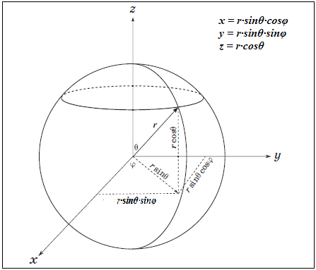
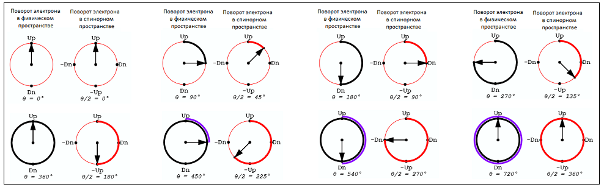
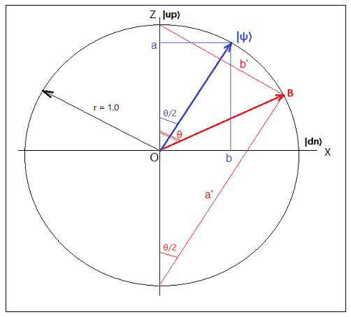
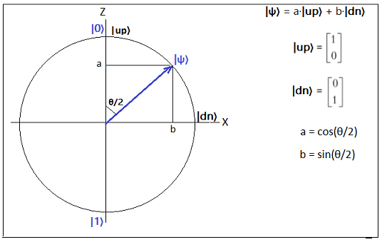
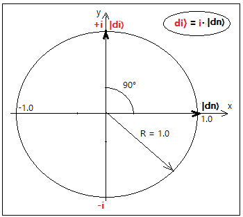
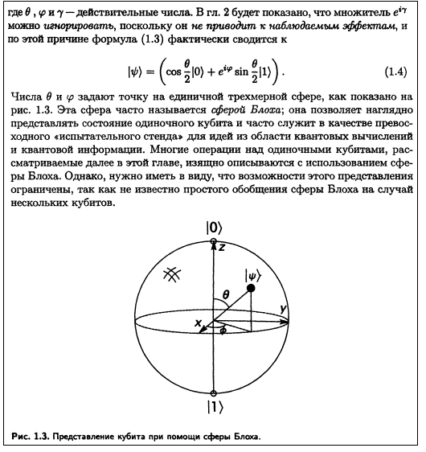
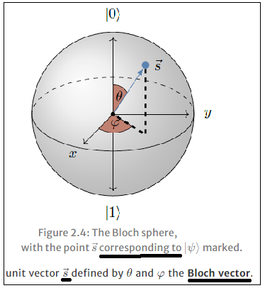
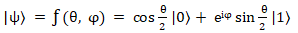
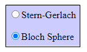

В предыдущей части было показано, что при измерении спина при прибором Ш-Г вероятность получения +1 равна cos2(α/2), а вероятность получения -1 соответственно равна sin2(α/2). Было высказано предположение, что по всей видимости, величины cos(α/2) и sin(α/2) даже без возведения их в квадрат, также представляют интерес. С этой целью был сделан еще один вариант программной модели, который во многом похож на модель из предыдущей части.
Physical space
"Up" and "Down"
180° apart (opposite direction)
Mathematical (spinor) space
"|up〉" and "|down〉" 90° apart
(orthogonal direction)
To determine the value of the quantum state |ψ〉, set the values of the polar and azimuth angles
either using the GUI in the upper right corner of the program, or using the keys located
under the GUI.
Red arrow - the direction of spin in physical space (Bloch vector).
Blue arrow - the direction of spin in spinor space |ψ〉,
In the above visualization, you can set the direction of the electron spin in three-dimensional physical space using two angles.
The first angle, which is given the name of the polar angle θ.
The second sets the azimuth angle φ. Since the value of the polar angle in the spinor space is half
of the corresponding angle in the physical space, the corresponding spinor angle θ/2 is simultaneously set.
Azimuthal angles in both spaces have the same values.
The red arrow determines the direction
of the electron's spin in physical space. The blue arrow determines the direction of the spinor.
The values of the polar and azimuth angles are set in the right part of the window either using the GUI or using the buttons.
In response to this action, the value of the state function and two probabilities corresponding to the spin values +1 and -1 are given.
In the program, you can see the value of the state vector |ψ〉
for any predetermined angle of the electron in the spinor and physical space.
In physical space, the angle θ has a range of variation from 0° to 720°, and in spinor from 0° to 360°.
Therefore, on the sphere, two revolution of θ physical space correspond to one revolution of θ spinor space.
The azimuthal angle φ in both spaces has the same range of variation from 0° to 360°.
Thus, each point on the surface of the sphere defines a unit vector in the spinor space.
The starting points of these vectors are located in the center of the sphere.
В приведенной визуализации можно задать значение вращения электрона (красная стрелка) в трехмерном физическом пространстве при помощи двух углов. Первый угол, которому дано название θ (полярный угол), задает (географическую) широту. Второй угол φ задает азимутальный угол или (географическую) долготу. Вектор показанный красной стрелкой (вектор B) можно назвать вектором Блоха. Настоящая сфера Блоха, с которой ассоциируется вектор Блоха, появится в следующей (третьей) части. Данную программную модель можно рассматривать только как несколько измененный вариант сферы Блоха.
Так как в спинорном пространстве значение полярного угла составляет половину от соответствующего угла в физическом пространстве,
(объяснение этого приведено ниже по тексту), то одновременно задается соответствующий угол спинора θ/2 (синяя стрелка).
Азимутальные углы в обеих пространствах имеют одинаковые значения.
Значения полярного и азимутального углов устанавливается в правой части окна либо при помощи GUI,
либо при помощи кнопок. В ответ на это действие выдается значение вектора состояния |ψ〉 и две
вероятности соотвествущие значениям спина +1 и -1.
Почему кроме физического пространства появляется еще и спинорное пространство, и почему оно
так называется, будет пояснено немного позже.
В программе можно увидеть значение вектора состояния |ψ〉 для любого наперед заданного угла электрона в спинорном и физическом пространстве. В первой части в эксперименте Ш-Г полярные углы имели диапазон изменения от 0° до 180°, что было достаточно для имитации физического прибора. В данном разделе создана программная модель для объяснения математики описывающей квантовый спин. и поэтому поворот электрона в ней отображается как в физическом пространстве (также как в эксперименте Ш-Г), так и в математическом (спинорном) пространстве. В физическом пространстве диапазон изменения полярного угла теперь сделан от 0° до 720° (а не 0° до 180° как было в предыдущей части), а в спинорном - от 0° до 360°. В результате на сфере два оборота θфизическое пространство соответствуют одному обороту θспинорное пространство. Азимутальный угол φ в обоих пространствах имеет одинаковый диапазон изменения от от 0° до 360°. Таким образом каждая точка на поверхности сферы задает единичный вектор в физическом пространстве, и еще одна точка - в спинорном пространстве. Начальные точки векторов расположены в центре сферы.
Из эксперимента Ш-Г в первой части мы выяснили, что если в результате измерения будет получено значение спина +1
то соответствующая этому значению вероятность равна cos2(α/2).
А если в результате измерения будет получено значение спина -1 то соответствующая этому значению вероятность
равна sin2(α/2).
При рассмотрении эксперимента Ш-Г угол α был определен следующим образом:
α = θdevice - θprepare spin
Программная модель, приведенная в этой части, практически совпадает с моделью Ш-Г из предыдущей части.
Отличие заключается в том, что теперь мы предполагаем, что спин всегда приготовлен вертикально вверх
и его полярный угол равен θprepare spin = 0,
а измерение, как и раньше, происходит по направллению вектора D с полярным углом равным θdevice.
Исходя из этих предположений получаем, что α = θdevice и теперь можно
обозначить угол α просто как α = θdevice = θ.
Хотя вектор D (от слова Device) из предыдущей части использовался для того, чтобы подчеркнуть
процесс проведения измерения прибором Ш-Г, в данной второй (и третьей) части этот вектор теперь обозначен
как B. Вектор B - это вектор Блоха (Bloch vector). Этот вектор является обычным
трехмерным вектором задающим координаты точки на сфере.

Вектор Блоха находится в трехмерном действительном пространстве R3 и имеет (обычно) единичную длину. Он задаается
двумя углами: θ и φ.
Замечание
В первой части вектор A (в трехмерном действительном пространстве) использовался для приготовления
состояния спина с углом θprepare spin.
После проведения процесса измерения вектор A меняет свое положение - теперь он располагается на прямой,
на которой находится вектор D. При этом вектор A после измерения
может иметь направление, как совпадающее с направлением вектора D, так и противоположное вектору D.
В эксперименте Ш-Г значениям углов θ = 0° и θ = 180° соотвествествовали положения вверх "up" и вниз "down" (или "dn").
В математике квантовой механике электрона используется так называемое спинорное пространство.
В физическом пространстве углам θ соотвествуют половинные углы θ/2 в спинорном пространстве:

Из рисунка видно, что одному полному повороту электрона в спинорном пространстве соответствуют два полных поворота
в физическом пространстве.
Таким образом получено довольно наглядное изображение того, "где прячутся значения вероятностей" в эксперименте Ш-Г.
Еще не следует забывать, что суммарная вероятность измерения значений спина "+1" и "-1" равна 1.0 (диаметр
окружности) и, следовательно,
(a')2 + (b')2 = 1.0
и
cos2(θ/2) + sin2(θ/2) = 1.0
Рассмотрим еще один рисунок полученный из программной модели текущего раздела:

В отличе от предыдущего рисунка радиус окружности равен r = 1.0. Нетрудно видеть, что отношение
модуля длины отрезка a к модулю длины отрезка b на этом рисунке равно отношению
длины отрезка a' к длине отрезка b' на предыдущем рисунке:
a / b = |a'| / |b'|
Косинус и синус половиннго угла θ/2 можно интерпретировать как координаты некоторого вектора ψ имеющего
единичную длину.

Из последнего рисунка можно сделать вывод, что вектор состояния |ψ〉 имеет только два измерения
и следовательно все возможные спиновые состояния могут быть представлены в двумерном
векторном пространстве. В качестве базисных векторов можно выбрать два ортогональных вектора |up〉 и |dn〉
|ψ〉 = a·|up〉 + b·|dn〉
Еще раз подчкркнем, что хотя в этой формуле векторы |up〉 и |dn〉 ортогональны (в спинорном пространстве)
в физическом пространстве они соответствуют противоположно направленным векторам.
Из этого следует, что обычным углам в физическом пространстве соответствуют половинные углы в спинорном пространстве.
Так как противоположные векторы (и направления) в спинорном пространстве представлены ортогональными векторами,
то это позволяет для этих векторов ввести понятие скалярного произведения и, кроме того, использовать весь аппарат
линейной алгебры.
Кроме того формула с половинными углами, которая приведена в первой части:
〈σ〉 = cos(α) = (+1)·cos2(α/2) + (-1)·sin2(α/2) = n·m
почти автоматически подталкивает к использованию ортогональных направлений вместо противоположных при математическом
описании частиц со значением спина равным 1/2.
Если бы физическое пространство, в котором мы пытаемся описать квантовый спин было двумерным, то все было бы более-менее
понятно. Два ортогональных вектора |up〉 и |dn〉 можно было бы взять в качестве базисных векторов.
Эти два вектора и все плоское двумерное пространство можно считать находящимся в поле действительных чисел и никаких
проблем бы не появилось. Это нетрудно увидеть из рассмотрения левой части приведенной ниже визуализации.
В левой части визуализации фактически показана проекция трехмерной визуализации, если на нее смотреть со стороны
оси OY - то есть отображена плоскость ZOX (φ = 0°).
ABCDEF
Также рассмотрим трехмерную визуализацию, которая приведена в начале второй части. В данной визуализации можно задать как режим отображения в физическом пространстве так и в спинорном пространстве. Положим значение угла φ = 0. В этом случае картинка на трехмерной визулизации совпадает с левой картинкой двумерной визуализации если выбран режим "Mathematical (spinor) space".
Однако, здесь мы сталкиваемся со следующей проблемой. Хотя значение спина может принимать только два значения, вектор Блоха (и как следствие вектор состояния |ψ〉) в общем случае расположен не в плоскости, а в трехмерном пространстве. Поэтому нам требуется каким-то образом поместить вектор состояния |ψ〉 в трехмерное пространство. А двумерное действительное пространство естественно для этого не подходит.
Картина нарушается когда мы пытаемся направить спин перпендикулярно или под каким-то углом к
плоскости OXZ. Электрон находится в трехмерном физическом пространстве и поэтому
мы имеем его трехмерные повороты в физическом пространстве. Возникает вопрос - как отразить
трехмерные поворота электрона в двумерном пространстве. Для разрешения этой задачи вводится специальное спинорное
пространство. Если в качестве базисного вектора в спинорном пространстве вдоль оси z можно по-прежнему взять вектор |up〉,
то что взять в качестве второго базисного вектора? Вектор |dn〉, на первый взгляд, не подходит,
так как он лежит в плоскости OXZ, а нам требуется базисный вектор,
который должен быть перпендикулярным этой плоскости. Поэтому приходится вводить двумерное комплексное
пространство. Возьмем в качестве второго базисного вектора совершенно новый базисный вектор
и обозначим его |di〉. Этот вектор находится на мнимой оси i и показан на следующем рисунке

Однако, мы не можем расположить этот базисный вектор вдоль оси Y в спинорном (но не в физическом!!!) пространстве
так как вектор состояния |ψ〉 имеет всего две компоненты и следовательно должен иметь только два базисных вектора.
Поэтому базисный вектор |di〉 представим в виде
|di〉 = i·|dn〉, где i - мнимая единица
Таким образом базисный вектор |di〉 является почти тем же базисным вектором |dn〉 но повернутым относительно
него на 90° в плоскости OXY.
На самом деле никакого базисного вектора |di〉 конечно нет - он введен (фиктивно) только для того чтобы показать как можно объяснить появление комплексных чисел в математике описывающей спин электрона. Базисные векторы должны быть представлены действительными числами, но коэффициенты на которые умножаются базисные векторы (координаты вектора) могут быть как действительными так и комплексными числами в спинорном пространстве.
Приведем пример. В книге Сасскинда "Квантовая механика" (о которой шла речь в первой части) приведены формулы (2.10) для базисных векторов |forward〉 и |back〉 (в этой книге они обозначены как|i〉 и |o〉). Они имеют следующий вид:
Замечание
В книге Сасскинда комплексные числа впервые появляются при прямом вычислении базисных векторов
вперед и назад в параграфе 2.4.
Как в левой так и в правой частях двумерной визуализации можно наблюдать изменение вектора состояния |ψ〉 (синий вектор) в зависимости от угла θ. Красным цветом изображен вектор Блоха. Левая часть показывает изменение векторов в плоскости ZOX (φ = 0°), а правая - в плоскости ZOY (φ = 90°).
Из приведенного примера можно сделать вывод, что в выражении для вектора состояния
|ψ〉 = a·|up〉 + b·|dn〉
коэффициенты "a" и "b" при базисных векторах могут иметь не только
действительные но и комплексные значения. Такие вектора принято называть спинорами,
а пространство в котором определены эти вектора - спинорным пространством.
Надо четко отличать вектор Блоха B от вектора состояния
На мой взгляд (это сугубо мое мнение) некоторые авторы книг по квантовой механике не делают различий между вектором Блоха и
вектором состояния

Но тут же рядом с рисунком приведена формула по которой происходит вычисление вектора состояния

Могу предполохить что Нильсен и Чанг считают, что раз вектор состояния
И по всей видимости они полагают, что раз направления |0〉 и |1〉
на сфере Блоха ортогональны в спинорном пространстве, то приведенное ими изображение является вполне приемлимым.
Но мне кажется их рисунок прведенный рядом с формулой для расчета
Сфера блоха выглядит фактически также как и визуализация Ш-Г из предыдущей части.
Но каждому вектору Блоха, который является обычным трехмерным вектором задающим координаты точки на сфере,
сопоставлен вектор состояния с помощюю следующей формулы:

Вектору |0〉 на сфере Блоха соответствует вектор|up〉 (смотри рисунок выше по тексту), а вектору |1〉 на сфере Блоха соответствует вектор |dn〉. Но если векторы |up〉 и |dn〉 являются ортогональными векторами, то векторы |0〉 и |1〉 на сфере Блоха хотя и лежат на одной прямой но условно представляют ортогональные векторы |up〉 и |dn〉. Зато при таком подходе на сфере Блоха показаны истиные углы θ, а не половинные углы θ/2.
В следующей
( третьей )
части) будет показана визуализация классической сферы Блоха и то, как сферу Блоха можно совершенно
естественно связать с экспериментом Ш-Г, визуализация которого приведена в первой части.
Для этого в третьей части сделаны два режима работы программы, которые можно переключать
между собой. В одном режиме визуализируется эксперимент Ш-Г, а в другом представлена визуализация
классической сферы Блоха.

Также в следующей части будут визуализированы все виды квантовых вращений. Квантовые вращения играют определяющую роль для понимания работы квантовых вентилей.